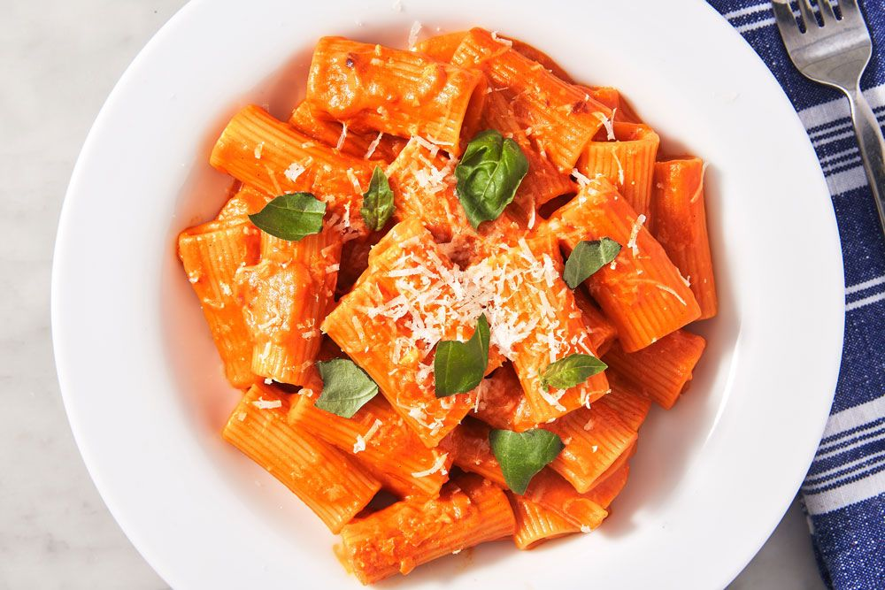

Vodka Pasta

Vodka Pasta is one of my favorite dishes to make. It's
incredibly simple and filling, with kids and adults alike
able to enjoy the flavor.
Are you ready to dig in?
Ingredients
- 1 lb of Pasta
- 1 can of tomato paste
- 8oz of Parmesan
- 2-3 tbl spoons of heavy cream
- 1oz of vodka
- 1 shallot
- 5-6 cloves of garlic
Steps
- Boil a pot of heavily-salted water and let your pasta cook for about 8 minutes
- Finely chop the shallots and garlic, and add them to
a pan with a tablespoon of butter on medium heat
- Once the shallots become translucent and the garlic just begins
to brown, add the can of tomato paste and let it cook for about 4
minutes
- Deglaze the pan with the vodka, and cook out the alcohol
for about 2 minutes
- Begin thinning the tomato paste out with 2-3 heaping spoons
of the pasta water, as well as the heavy cream. Add more pasta
water to achieve the ideal consistency
- Add the parmesan in small scoops
- Drain the pasta water and add in the pasta. Stir the pasta
until it is covered in the vodka sauce
- Sprinkle some extra parmesan and serve!